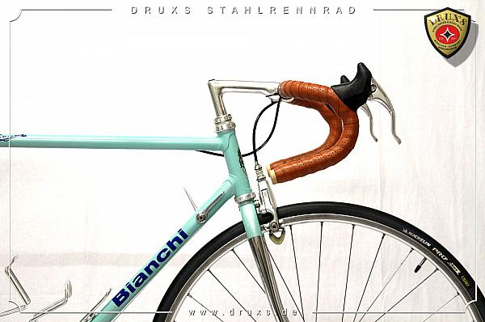

The term "restoration" denotes the restoring of an old state, which has been mostly lost over time.
A good restorer has extensive historical knowledge, adequate technical knowledge, to ensure years of practice to preserve and restore the restoration objects - and also enough respect for the original and its history.
At Druxs you can see exactly that. We have passion, appropriate training, years of experience and our customers are always satisfied. Each completed restoration work receives a guarantee from us - this guarentee can be found as a decal on the seat tube, which does nto take away from the authentic look of the bike.
- 

Some services we offer include chroming, frame painting, frame painting, leather restoration, indetification, decal and sand blasting. Contact us for more information.